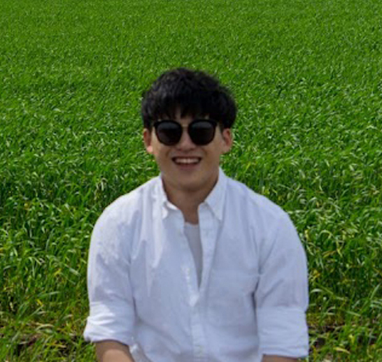
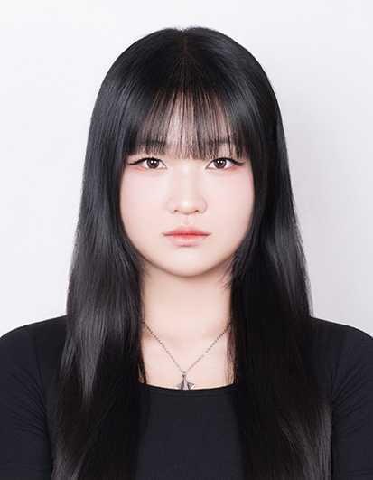
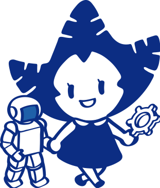
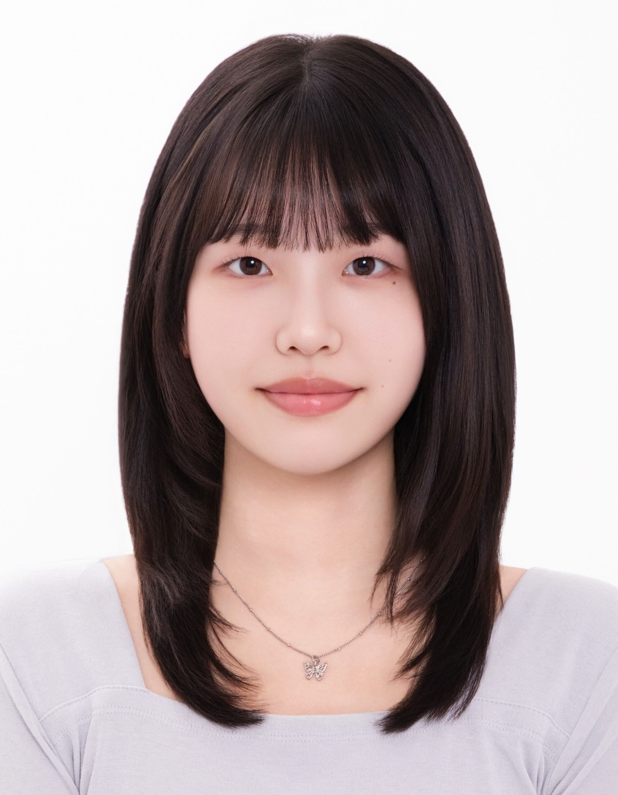
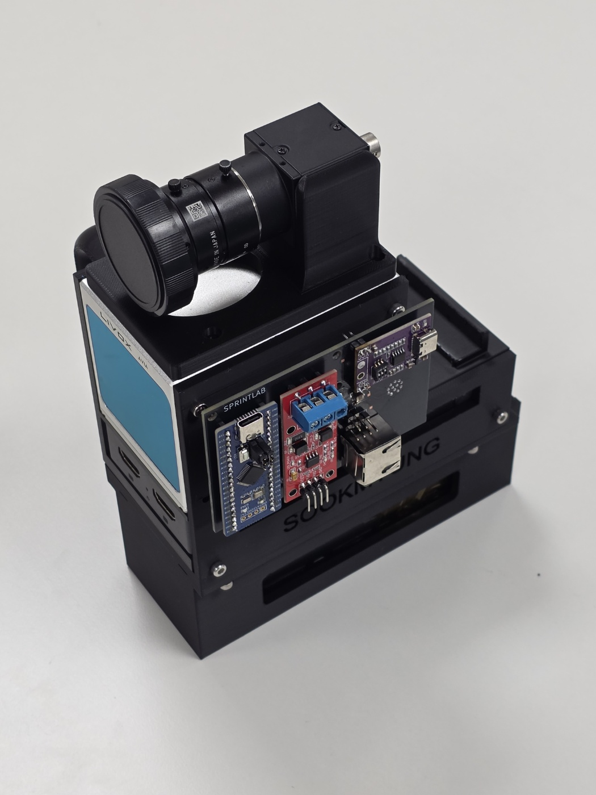
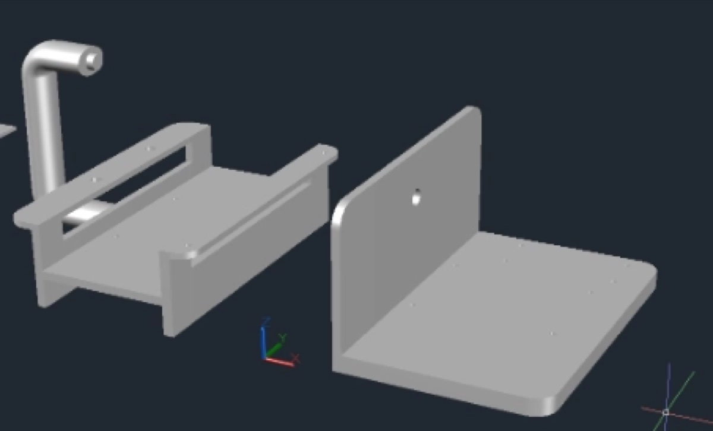
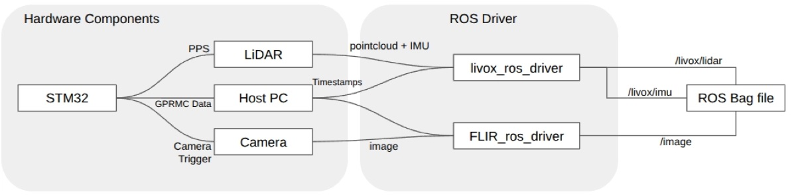
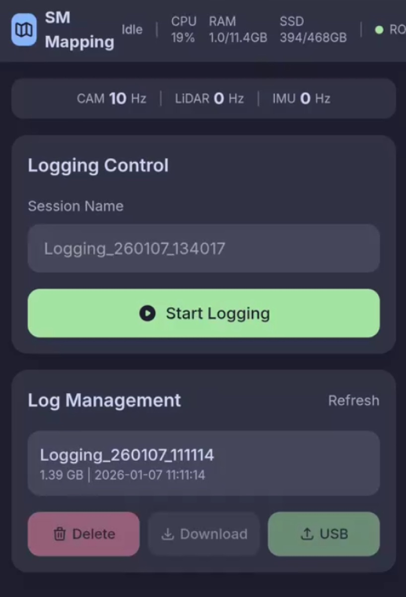
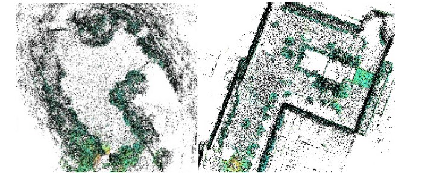
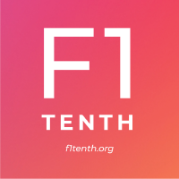

Object-Centric View Planning for Photometric 3D Reconstruction
Int'l Conf. on Control, Automation and Systems (ICCAS), accepted, poster presentation

Cost, Effort Information
To build an intelligence that understands what is observed, what remains uncertain, and what evidence is needed for reliable action.
To build a scientific foundationfor sensor-based understanding of real-world environments, grounded in observability, uncertainty, and spatial reasoning.
To develop robot perception systemsthat can localize, map, recognize, and interact with the physical world while knowing the limits of their own perception.
To advance spatial representationsthat support certifiable world claims, cross-modal reasoning, long-term memory, and operation under ambiguity and change.
To define the principlesthat let robots identify what is observable, locate the boundary of reliable perception, and acquire the evidence needed for action.
어둠이나 연기, 움직이는 장애물이 많은 실제 현장에서는 센서 데이터가 불완전하거나 서로 어긋나기 쉽습니다. SPRINT Lab은 악조건에서도 로봇의 위치와 주변 공간을 정확히 추정하고, 지금 가진 정보만으로 판단할 수 있는지 아니면 더 관측해야 하는지 스스로 가늠하는 기술을 연구합니다.
카메라·LiDAR·IMU 등 여러 센서의 관측값을 위치 추정, 3차원 지도 작성, 장소 인식, 경로 계획에 바로 쓸 수 있는 공간 정보로 바꿉니다.
어둠이나 연기, 움직이는 물체로 일부 센서 정보가 훼손될 때, 다른 센서와 관성 측정값을 어떻게 조합해야 위치 추정이 무너지지 않을까?
특징이 적은 복도나 사전 3D 지도 없는 2차원 평면도 환경에서도, 카메라와 LiDAR 관측을 정확히 정렬해 주행할 수 있을까?
계절·조명·날씨가 바뀌거나 로봇마다 센서 배치와 시점이 달라도, 같은 장소를 정확히 다시 찾아낼 수 있을까?
로봇이 현재 위치와 센서·연산 자원의 한계 안에서 무엇을 확실히 알 수 있고, 무엇을 더 확인해야 하는지 판단하는 기준을 연구합니다.
지금 들어온 관측만으로 위치·경로·주변 상황 판단을 확정할 수 있는지, 아니면 특징 부족이나 가림·모호함 때문에 불확실성이 남아 있는지 어떻게 판별할까?
불확실성이 클 때 정해진 시간과 배터리·연산 한도 안에서 시점을 옮겨 다시 볼지, 다른 센서를 쓸지, 추가 계산을 할지 어떻게 결정할까?
환경이 변하거나 여러 로봇이 지도를 함께 쓸 때, 기존 공간 정보 중 그대로 믿을 부분과 다시 관측해 고칠 부분을 어떻게 구분할까?
현재 연구는 Navigation, Mapping, Spatial AI 세 갈래 프로젝트로 이어집니다.
Spatial AI for Robots카메라·LiDAR·IMU만으로 2차원 평면도 위 위치를 맞추고, 사족·바퀴 등 로봇 형태나 고속·악천후 조건이 바뀌어도 무너지지 않는 주행 인지 기술을 만듭니다.
Situated Knowability현재 센서 입력만으로 위치나 주행 경로를 정하기 어려운 구간(특징 없는 복도, 연기·가림 등)을 스스로 감지하고, 멈추거나 시점을 바꿔 추가 단서를 확보하는 기준을 찾습니다.
Spatial AI for Robots휴대용 소형 장비 안의 여러 센서를 정밀하게 보정·동기화해, 걸어가는 것만으로 3차원 정밀 지도를 만드는 시스템을 구축합니다.
Situated Knowability생성한 지도에서 관측이 부족해 오차가 큰 구역이나 시간이 지나 달라진 영역을 가려내고, 어느 지점을 다시 스캔해야 지도 품질이 올라가는지 판단합니다.
Spatial AI for Robots움직이는 물체가 많거나 자연어 주행 지시가 모호한 환경에서, 의미 정보(semantics)와 기하 구조를 결합해 정합과 장면 이해의 안정성을 높입니다.
Situated Knowability로봇이 해석한 장면이나 언어 명령을 그대로 믿고 실행해도 되는지, 아니면 이동해 다시 확인하거나 되물어야 하는지 판단하는 불확실성 기준을 정의합니다.









Go2 Pro 내부 Ethernet을 Jetson Orin Nano Super에 직접 물리고, Jetson에서 비공식 go2_ros2_sdk를 띄워 WebRTC endpoint를 ROS 2 topic으로 받아 오는 구성이다. Go2 본체에 SSH로 들어가지는 않고, Jetson의 유선 NIC만 로봇과 같은 대역으로 맞춘 뒤 통신을 연결한다.
Go2 Pro 내부 Ethernet ⇄ Jetson NIC · 192.168.123.99/24
찾아낸 ROBOT_IP → WebRTC → go2_ros2_sdk → ROS 2
실측 기준 — 직접 측정한 Go2 상판 내부 전원 포트의 출력은 12V였다. Jetson Orin Nano Super가 지원하는 DC 입력 범위(9–20V) 안에 들어오므로 별도의 강압 회로는 달지 않는다. 로봇의 Ethernet IP는 미리 가정하지 않고, 연결한 장비에서 직접 스캔해 찾는다.
먼저 상판 내부 Ethernet 포트와 Jetson을 짧은 LAN 케이블로 잇는다. 이 직결 링크에는 DHCP 서버가 없으므로 자동 할당을 기다리지 않고 Jetson의 유선 NIC에 192.168.123.99/24를 수동으로 지정한다. 이때 Wi-Fi로 잡힌 인터넷 경로가 덮어쓰이지 않도록 gateway와 DNS는 비워 둔 채 아래 명령으로 인터페이스를 설정한다.
ip -br link
sudo nmcli connection add type ethernet \
ifname enP1p1s0 con-name go2-internal \
ipv4.method manual ipv4.addresses 192.168.123.99/24 \
ipv4.never-default yes ipv6.method disabled
sudo nmcli connection up go2-internal
ip -4 address show dev enP1p1s0위 명령의 enP1p1s0는 예시 이름이므로, 첫 명령에서 확인한 실제 유선 인터페이스 이름으로 바꿔 입력한다.
통과 기준 — 지정한 NIC에 192.168.123.99/24가 표시되고 Wi-Fi가 계속 기본 route로 남아 있다.
이 작업에서는 Go2 Pro에 SSH로 로그인할 필요가 없다. 공개된 SSH 비밀번호가 없을 뿐더러 로봇 내부 shell에 들어가지 않고도 외부에서 통신을 열 수 있기 때문이다. 대신 Jetson에서 같은 Ethernet 대역을 스캔해 응답하는 로봇 IP와 WebRTC signaling port를 찾는다.
sudo apt update
sudo apt install -y arp-scan netcat-openbsd
sudo arp-scan --interface=enP1p1s0 192.168.123.0/24
ip neighbour show dev enP1p1s0
nc -vz ROBOT_IP 9991
nc -vz ROBOT_IP 8081
ip route get ROBOT_IP주소가 하나 잡히더라도 곧장 고정 IP로 단정하지 말고, Go2 전원을 껐다 켰을 때 목록에서 사라졌다가 다시 올라오는지 교차 확인한다. 로봇 IP임이 확인되면 이후 명령의 ROBOT_IP 자리에 이 주소를 넣어 사용한다.
통과 기준 — Jetson의 유선 NIC에서 로봇 IP로 연결이 닿고, WebRTC signaling port(9991 또는 8081) 가운데 하나가 응답한다.
JetPack 6 기반의 Ubuntu 22.04 환경을 준비하고 ROS 2 Humble을 설치한 뒤, 그 위에 Pro 모델과 WebRTC 연결을 지원하는 비공식 go2_ros2_sdk를 내려받아 빌드한다.
mkdir -p ~/go2_ws
cd ~/go2_ws
git clone --recurse-submodules \
https://github.com/abizovnuralem/go2_ros2_sdk.git src
source /opt/ros/humble/setup.bash
sudo apt install -y python3-pip clang portaudio19-dev \
ros-humble-image-tools ros-humble-vision-msgs
python3 -m pip install -r src/requirements.txt
rosdep install --from-paths src --ignore-src -r -y
colcon build --symlink-install통과 기준 — colcon build가 오류 없이 끝나고 ~/go2_ws/install/ 디렉터리가 생성된다.
먼저 휴대전화 앱과 로봇의 연결을 끊어 세션 충돌을 막은 다음 Jetson에서 SDK를 실행한다. 처음부터 모든 기능을 한꺼번에 켜면 디버깅이 어려우므로 RViz, Nav2, SLAM, 조이스틱은 모두 끈 상태로 순수 ROS 통신부터 확인한다.
source /opt/ros/humble/setup.bash
source ~/go2_ws/install/setup.bash
export ROBOT_IP="찾아낸_로봇_IP"
export CONN_TYPE="webrtc"
ros2 launch go2_robot_sdk robot.launch.py \
rviz2:=false nav2:=false slam:=false \
foxglove:=false joystick:=false teleop:=false만약 Go2 펌웨어 1.1.15 이상에서 암호화 handshake 오류가 발생한다면, 저장소 안내에 따라 기기별 키를 ROBOT_AES_KEY 환경변수로 넘겨 준다(단, 비밀번호나 키 값은 문서나 공개 저장소에 남기지 않는다). 노드가 정상 실행되면 다른 터미널에서 topic 생성과 메시지 수신 여부를 점검한다.
ros2 node list
ros2 topic list --types
ros2 topic info --verbose 실제_상태_TOPIC
ros2 topic echo --once 실제_상태_TOPIC확인한 범위 — 여기서는 Jetson에 ROS 2 node와 topic이 뜨고 로봇의 상태 message가 실제로 한 건 이상 들어오는지까지만 검증한다. SSH 접속이나 개별 센서 점검, 주행 제어는 이 단계의 범위에 포함하지 않는다.
배선 작업을 시작하기 전에 반드시 Go2 배터리를 분리한 뒤 상판을 연다. 내부 12V 포트에서 12V와 GND 두 선을 뽑아 반대쪽을 Jetson용 5.5×2.5mm DC plug에 납땜하고, 수축 튜브 등으로 노출 부위를 꼼꼼히 절연한다. 마무리로 Jetson을 상판 위 절연 스탠드오프에 고정하고, 로봇이 움직일 때 LAN선과 전원선이 당겨지지 않도록 여유를 두어 묶는다.
배선 확인 — Jetson에 전원을 꽂기 직전, 멀티미터로 DC plug 끝단의 전압(12V)과 극성이 맞는지 한 번 더 확인한다.
Go2 ROS2 SDK · Unitree ROS2 네트워크 설정 · Unitree WebRTC Connect · Jetson Orin Nano 하드웨어 안내 · Carrier Board Specification
Slack에서 연구 질문을 던지면 nanobot이 로컬 LLM 머신을 거쳐 Obsidian vault 속 논문 메모와 실험 기록을 직접 찾아 읽고 답하는 구조다. 특정 GPU를 강제하지 않으며, 손에 있는 머신의 VRAM 용량에 맞춰 모델 크기와 양자화 수준만 알맞게 고르면 된다.
Slack → nanobot gateway → Ollama · quantized local LLM → Obsidian vault
NVIDIA GPU가 달린 Linux 머신이라면 먼저 GPU 모델과 전체 VRAM을 조회한다. 반면 Apple Silicon은 별도 VRAM 대신 unified memory를 CPU와 공유하므로 운영체제와 다른 앱이 쓸 여유 메모리를 빼고 가용 용량을 잡아야 한다. 지원 사양을 확인했다면 Ollama hardware 안내를 참고해 Ollama를 설치하고 API 서버가 정상 응답하는지 점검한다.
nvidia-smi --query-gpu=name,memory.total --format=csv
curl -fsSL https://ollama.com/install.sh | sh
ollama -v
curl http://127.0.0.1:11434/api/tags통과 기준 — 사용할 수 있는 메모리 용량을 확인해 적어 두었고, Ollama API가 모델 목록을 JSON 형태로 돌려준다.
같은 파라미터 수라도 가중치를 어떤 정밀도로 저장하느냐에 따라 필요한 메모리가 크게 달라진다. 한정된 VRAM에 최대한 큰 모델을 올리려면 Q4_K_M부터 시작하는 것이 표준이고, 메모리에 여유가 있어 양자화 손실을 줄이고 싶다면 Q8_0을 택한다. 반면 FP16은 메모리 소모가 커서 초기 로컬 에이전트 구축에는 어울리지 않는다. 아래 표의 태그는 2026년 8월 Ollama 배포본을 기준으로 삼은 예시이므로, 실제로 설치하는 시점의 최신 태그 이름은 한 번 더 확인하는 것이 좋다.
예컨대 2026년 8월에 공개된 Qwen3.8-27B의 공식 Ollama Q4 파일은 18 GB로, 가중치 크기만으로도 16 GB GPU 메모리를 넘어선다. 따라서 16 GB 환경에 이 모델을 그대로 올리면 일부 레이어가 CPU로 밀려나고, 전량을 GPU에 적재하려면 24 GB급 GPU가 필요하다. 16 GB GPU에서 빠른 응답 속도와 긴 context를 챙기려 한다면 표에 정리한 대로 9B Q4 모델로 내려 잡는 쪽이 실용적이다.
| 사용 가능 메모리 | 먼저 시험할 태그 | 모델 파일 | 선택 기준 |
|---|---|---|---|
| 6–8 GB | qwen3.5:4b | 3.3 GB | 4K context로 검색과 대화 연결부터 확인한다. |
| 10–12 GB | qwen3.5:9b | 6.6 GB | 연구 메모 검색과 tool calling을 시작하기 무난하다. |
| 16 GB · 속도 우선 | qwen3.5:9b | 6.6 GB | 모델과 KV cache를 GPU에 남기고 16K 이상 context를 시험할 수 있다. |
| 16 GB · 최신 세대 시험 | qwen3.8:27b-q4_K_M | 18 GB | CPU offload가 발생하며, 더 낮은 비트의 community quant를 쓸 때는 응답 품질을 직접 검증해야 한다. |
| 24 GB | qwen3.8:27b-q4_K_M | 18 GB | 짧은 context부터 시작해 GPU에 전부 올라가는지 확인한다. |
| 40 GB 이상 | qwen3.8:27b-q8_0 | 30 GB | Q8과 긴 context를 함께 시험할 여유가 있다. |
Ollama 태그 목록에 적힌 파일 크기는 순수 가중치만의 크기이며, 실제로 모델을 돌릴 때는 context용 KV cache와 실행 버퍼가 추가로 VRAM을 차지한다. 아래 명령으로 먼저 27B Q4 모델을 내려받아 시험해 보고, 16 GB 환경에서 CPU offload 때문에 속도가 너무 답답하다면 표의 9B 태그로 교체하면 된다.
ollama pull qwen3.8:27b-q4_K_M
ollama show qwen3.8:27b-q4_K_M
ollama run qwen3.8:27b-q4_K_M짧은 질문을 던져 정상적으로 답이 돌아오는지 본 뒤 /bye로 대화를 빠져나와 메모리 적재 상태를 확인한다.
ollama ps
curl http://127.0.0.1:11434/api/psOllama context 안내에서 설명하듯 context 길이를 늘릴수록 메모리 점유율도 가파르게 올라가므로, 처음에는 4K로 시작해 여유를 보며 8K, 16K 순으로 높이는 것이 안전하다. 16 GB GPU에서 27B Q4를 실행할 때 ollama ps 결과에 CPU와 GPU 비율이 나뉘어 표시되는 것은 자연스러운 현상이며, 100% GPU 적재를 원하거나 지연 시간이 거슬린다면 9B Q4로 내려서 쓰면 된다.
공개 벤치마크 점수만 놓고 보면 Qwen3.8-27B는 Gemini 3.5 Flash와 대등한 구간에 걸쳐 있다(Terminal-Bench 2.1 73.0 대 76.2, SWE-bench Pro 61.7 대 55.1, OSWorld-Verified 84.3 대 78.4, CharXiv 83.7 대 84.2). 다만 Qwen 결과와 Gemini 결과는 평가 조건이 다를 뿐더러 16 GB용 저비트 양자화 모델을 측정한 수치도 아니므로, 실제 연구 노트 검색과 실험 비교에 충분한지 여부는 내가 쓸 양자화판으로 직접 시험해 판단해야 한다(→ 실제 연구 맥락이 이어지는지 확인하기).
통과 기준 — 선택한 태그와 양자화 수준이 ollama show에 정확히 표시되고 OOM 없이 응답이 돌아오며, ollama ps에서 확인한 GPU 적재 비율과 첫 응답 시간을 함께 기록한다.
기존 Python 환경과 패키지가 엉키지 않도록 nanobot은 별도 가상환경을 만들어 설치한다. 설치 뒤 초기 설정 마법사를 마치면 기본 설정 파일은 ~/.nanobot/config.json에, 작업 상태 파일은 ~/.nanobot/workspace/ 아래에 자리 잡는다.
python3 -m venv .venv
source .venv/bin/activate
python -m pip install -U nanobot-ai
nanobot onboard --wizard통과 기준 — nanobot status가 현재 참조 중인 config와 workspace 경로를 오류 없이 출력한다.
nanobot provider 안내에 따라 기존 config.json 설정을 지우지 말고 아래 블록만 덧붙여 병합한 뒤, 이어서 연결 상태를 시험한다. 이때 모델 이름은 앞서 Ollama로 내려받은 태그 이름과 한 글자도 틀리지 않게 맞춰야 한다.
{
"providers": {
"ollama": {
"apiBase": "http://127.0.0.1:11434"
}
},
"modelPresets": {
"local-quantized": {
"provider": "ollama",
"model": "qwen3.8:27b-q4_K_M",
"maxTokens": 1536,
"contextWindowTokens": 4096,
"temperature": 0.2
}
},
"agents": {
"defaults": {
"modelPreset": "local-quantized"
}
}
}nanobot status
nanobot agent -m "한 문장으로 현재 연결 상태를 답해 줘."통과 기준 — 터미널에 nanobot의 응답이 출력되고, 동시에 ollama ps에서 해당 모델이 올라와 실행 중인 모습이 보인다.
개인 메모가 섞인 전체 vault를 한꺼번에 열기보다는, 논문 요약과 실험 기록만 따로 추려 복사한 전용 vault부터 연결하는 것이 안전하다. 이 전용 vault 최상위 폴더에 AGENTS.md 파일을 두어 에이전트가 읽고 쓸 수 있는 경계를 분명히 정해 준다.
# Research vault rules
- 답변마다 근거가 된 노트의 상대 경로를 적는다.
- 명시적으로 요청하지 않으면 기존 노트를 수정하지 않는다.
- 새 메모는 00-Inbox/ 아래에 초안으로 작성한다.
- 기록된 사실, 문헌의 주장, 추측을 구분해서 쓴다.규칙 파일을 저장했다면 해당 vault의 절대 경로를 지정해 첫 질문을 던져 본다.
nanobot agent \
--workspace "/absolute/path/to/robotics-vault" \
-m "최상위 폴더를 나열하고, 읽은 파일 경로를 함께 적어 줘."통과 기준 — 답변에 vault 내부 경로만 인용되고 기존 노트 내용은 조금도 바뀌지 않는다.
Slack API 페이지에서 From scratch를 선택해 새 앱을 만든다. 이어서 Socket Mode를 활성화하고 connections:write 권한을 가진 App-Level Token(xapp-…)을 발급받은 뒤, OAuth & Permissions 메뉴에 chat:write, app_mentions:read, channels:history, groups:history, im:history 권한을 차례로 추가한다.
다음으로 Event Subscriptions의 bot events에 message.im, message.channels, app_mention을 등록하고, App Home의 Messages Tab을 켠 상태에서 앱을 workspace에 설치해 Bot Token(xoxb-…)을 복사한다. 나중에 파일 첨부까지 주고받으려면 files:read와 files:write 권한을 보탠 뒤 앱을 한 번 다시 설치해야 적용된다.
먼저 시험용 비공개 채널을 하나 파서 방금 만든 Slack 앱을 초대한다. 그런 다음 본인의 Slack 사용자 ID(U…)와 채널 ID(C…)를 복사해 두고, 기존 config.json의 channels 항목에 아래 설정을 합친 뒤 플러그인과 환경변수를 순서대로 적용한다. 설정 파일 안에 비밀키가 남지 않도록 JSON에서는 실제 token 대신 환경변수만 참조하게 둔다.
{
"channels": {
"slack": {
"enabled": true,
"botToken": "${SLACK_BOT_TOKEN}",
"appToken": "${SLACK_APP_TOKEN}",
"allowFrom": ["U_YOUR_USER_ID"],
"groupPolicy": "allowlist",
"groupAllowFrom": ["C_YOUR_TEST_CHANNEL_ID"],
"groupRequireMention": true
}
}
}nanobot plugins enable slack
export SLACK_BOT_TOKEN="xoxb-..."
export SLACK_APP_TOKEN="xapp-..."
nanobot channels status중요 — token을 export한 바로 그 터미널 세션에서 gateway를 띄워야 변수가 전달된다. 테스트를 마치고 사용 범위를 넓히기 전까지는 안전을 위해 allowFrom과 groupAllowFrom 제한을 풀지 않는다.
Slack과의 상시 연결 및 백그라운드 응답 처리는 gateway 프로세스가 도맡는다. 앞서 CLI에서 확인한 것과 똑같은 vault 경로를 넘겨 gateway를 실행하고, 테스트하는 동안 터미널을 끄지 않고 계속 켜 둔다.
nanobot gateway \
--workspace "/absolute/path/to/robotics-vault"준비되면 Slack에서 먼저 bot에게 DM을 보내 보고, 테스트 채널에서는 @bot이름을 멘션해 말을 걸어 본다. 기본 응답이 확인되면 “특정 노트 찾기”, “두 실험 기록 비교하기”, “00-Inbox/에 새 초안 만들기”가 뜻대로 동작하는지, 그리고 “허용하지 않은 채널에서의 호출”은 제대로 차단되는지 차례로 점검한다.
통과 기준 — DM과 허용된 채널에서만 응답이 오고, 모든 답변에 참고한 노트 경로가 붙으며, 새로 생성되는 파일은 00-Inbox/ 아래에만 저장된다. 혹시 Slack에서 아무 반응이 없다면 nanobot gateway --verbose로 로그를 띄워 token, event scope, 사용자·채널 ID 오탈자 여부를 순서대로 짚어 본다.
마지막으로 단편적인 검색을 넘어, 여러 날짜의 실험 기록을 대조해야 답이 나오는 질문으로 문맥 유지 능력을 시험한다. 예를 들어 vault 안에 아래와 같은 두 실험 노트가 들어 있다고 가정해 보자.
Experiments/2026-08-28-corridor.md
- 회전 구간에서 localization error 증가
- D455 exposure: 20 ms, IMU time offset: 2 ms 미만
Experiments/2026-08-21-corridor.md
- 같은 경로의 성공 run
- D455 exposure: 8 ms, LiDAR·IMU 설정은 8월 28일과 동일이 시험의 핵심은 모델이 노트에 적힌 근거만으로 답하는지 보는 데 있다. 날짜가 다른 두 파일에서 설정 차이를 정확히 뽑아내고, 이어지는 후속 질문에서도 앞선 비교 대상을 일일이 다시 언급하지 않고 대화 맥락을 자연스럽게 이어 가야 한다.
완료 기준 — 답변마다 실제 노트 경로가 근거로 달리고 기록된 사실과 에이전트의 추론이 또렷이 구분되며, 후속 질문에서도 앞선 실험과 변경해야 할 변수를 놓치지 않고 이어 간다.
arXiv RSS 피드는 Slack의 원문 채널에 빠짐없이 쌓아 두고, LLM이 연구 기준에 맞춰 추린 논문만 별도의 선별 채널로 보내는 파이프라인이다. 유료 LLM API token이 있다면 Google Apps Script에서 직접 API를 부르는 구성이 가장 간편하며, 연구실에서도 현재 이 방식을 쓰고 있다. 반면 외부 API 없이 로컬 Ollama를 써도 충분히 같은 결과를 낼 수 있는데, Google 서버의 Apps Script가 내 컴퓨터의 127.0.0.1에 접속할 수는 없으므로 이 경우에는 RSS 수집 스크립트까지 로컬 머신에서 함께 돌린다.
원문: arXiv RSS → Slack RSS app → #arxiv-inbox
API 사용: arXiv RSS → Google Apps Script → subscribed LLM API → Slack webhook → #arxiv-selected
로컬 사용: arXiv RSS → local scheduler → Ollama → Slack webhook → #arxiv-selected
먼저 역할이 다른 채널 두 개를 만든다. #arxiv-inbox에는 RSS로 들어오는 원문을 거르지 않고 그대로 쌓아 두고, #arxiv-selected에는 LLM이 추려낸 논문만 올린다. 이렇게 원문과 선별본을 나란히 보존해 두면 나중에 선별 프롬프트를 손볼 때 어떤 논문을 놓쳤는지 두 채널을 대조해 금방 찾아낼 수 있다.
워크스페이스에 Slack RSS 앱을 설치한 뒤, #arxiv-inbox 채널에 아래 명령을 입력해 로보틱스·컴퓨터 비전·인공지능 분야를 한 피드로 묶어 구독한다.
/feed subscribe https://rss.arxiv.org/rss/cs.RO+cs.CV+cs.AI
/feed list관심 분야가 다르면 arXiv RSS 안내를 보고 분야 코드를 자유롭게 바꾸면 되며, 처음에는 cs.RO 하나만 받아 봐도 좋다. arXiv RSS는 하루에 한 번 갱신되므로 명령을 친 직후에는 바로 메시지가 올라오지 않을 수 있다.
통과 기준 — /feed list 결과에 피드 주소와 대상 채널이 보이고, 다음 갱신 주기가 지난 뒤 inbox 채널에 논문 제목과 링크가 들어온다.
Slack Incoming Webhooks 문서에 따라 새 앱을 생성하고 Incoming Webhooks 기능을 켠다. 이어서 Add New Webhook to Workspace를 눌러 대상 채널로 #arxiv-selected를 고르면 https://hooks.slack.com/services/… 형태의 전용 URL이 발급된다. 이 주소만 알면 누구든 해당 채널에 글을 쓸 수 있으므로 소스 코드나 공개 저장소에 그대로 노출하지 않도록 주의한다.
통과 기준 — webhook 설정 페이지에 표시된 예제 curl 명령을 터미널에서 실행했을 때 #arxiv-selected에 테스트 메시지가 정상 도착한다.
외부 LLM API를 활용한다면 Google Apps Script에서 새 프로젝트를 열고 Project Settings → Script Properties에 아래 속성들을 등록한다. API_STYLE에는 사용하는 API 규격에 맞춰 openai나 anthropic을 적으면 되며, 다른 제공사의 API라도 두 형식 중 하나와 호환된다면 그대로 동작한다.
API_STYLE openai
API_ENDPOINT https://your-provider.example/v1/chat/completions
API_TOKEN 발급받은 API token
API_MODEL 사용 중인 model 이름
SLACK_WEBHOOK_URL https://hooks.slack.com/services/...
RSS_URL https://rss.arxiv.org/rss/cs.RO+cs.CV+cs.AI
RESEARCH_PROFILE 아래 선별 기준 전체포함:
- LiDAR·camera localization과 mapping
- 동적 환경의 3D perception과 uncertainty
- 실제 로봇 또는 공개 dataset으로 검증한 연구
제외:
- 로보틱스와 관계없는 순수 생성 모델
- 의료·위성 영상처럼 현재 프로젝트와 무관한 응용
- 초록에 방법이나 실험 기여가 드러나지 않는 논문
출력:
- 최대 6편
- 제목, arXiv URL, 지금 읽을 이유, 관련 프로젝트, 확신도
- 초록에 없는 내용은 추측하지 않기기본으로 열려 있는 Code.gs의 내용을 아래 코드로 교체한다. 이 스크립트는 앞선 단계에서 저장한 속성에서 token을 읽어 온 뒤 아직 보지 않은 새 RSS 항목만 추려 API에 넘기고, Slack 전송까지 성공하면 해당 arXiv ID를 Script Properties에 기록해 중복 알림을 막는다.
function collectArxiv() {
const store = PropertiesService.getScriptProperties();
const p = store.getProperties();
const xml = UrlFetchApp.fetch(p.RSS_URL).getContentText();
const channel = XmlService.parse(xml).getRootElement().getChild('channel');
const papers = channel.getChildren('item').slice(0, 40).map(item => ({
title: item.getChildText('title').trim(),
url: item.getChildText('link').trim(),
abstract: item.getChildText('description')
.replace(/<[^>]*>/g, ' ').replace(/\s+/g, ' ').trim()
}));
const seen = JSON.parse(p.SEEN_IDS || '[]');
const fresh = papers.filter(x => !seen.includes(arxivId_(x.url)));
if (!fresh.length) return;
const prompt = [
'다음은 오늘 arXiv RSS에 올라온 논문의 제목과 초록이다.',
p.RESEARCH_PROFILE,
'선별할 논문이 없으면 "오늘은 해당 논문 없음"이라고만 답한다.',
JSON.stringify(fresh)
].join('\n\n');
const answer = callLlm_(p, prompt);
UrlFetchApp.fetch(p.SLACK_WEBHOOK_URL, {
method: 'post',
contentType: 'application/json',
payload: JSON.stringify({ text: answer })
});
const ids = fresh.map(x => arxivId_(x.url));
store.setProperty('SEEN_IDS', JSON.stringify([...new Set(seen.concat(ids))].slice(-500)));
}
function callLlm_(p, prompt) {
const anthropic = p.API_STYLE === 'anthropic';
const headers = anthropic
? { 'x-api-key': p.API_TOKEN, 'anthropic-version': '2023-06-01' }
: { Authorization: 'Bearer ' + p.API_TOKEN };
const body = anthropic
? { model: p.API_MODEL, max_tokens: 1400, messages: [{ role: 'user', content: prompt }] }
: { model: p.API_MODEL, messages: [{ role: 'user', content: prompt }], temperature: 0.2 };
const res = UrlFetchApp.fetch(p.API_ENDPOINT, {
method: 'post',
contentType: 'application/json',
headers,
payload: JSON.stringify(body),
muteHttpExceptions: true
});
if (res.getResponseCode() >= 300) throw new Error(res.getContentText());
const data = JSON.parse(res.getContentText());
return anthropic
? data.content.map(x => x.text || '').join('')
: data.choices[0].message.content;
}
function arxivId_(url) {
const match = url.match(/\/abs\/([^?#]+)/);
return match ? match[1] : url;
}API 형식이 다를 때 — endpoint와 token을 정확히 넣었는데도 4xx 오류가 뜬다면 callLlm_() 함수 안의 header, body, 응답 파싱 한 줄만 해당 서비스 API 문서에 맞게 고치면 된다. 앞뒤의 RSS 수집과 Slack 전송 로직은 손댈 필요가 없다.
별도의 유료 API가 없다면 앞선 프로젝트에서 띄워 둔 Ollama를 그대로 재사용하면 된다(→ 로보틱스 연구용 로컬 에이전트 구축하기). 다만 Google 서버에서 내 PC의 localhost를 호출할 수는 없으므로, 아래의 Python 수집기를 Ollama가 돌고 있는 같은 머신에 설치해야 한다. 먼저 작업 폴더와 가상환경을 만들어 필요한 패키지 두 가지만 설치한다.
mkdir arxiv-filter
cd arxiv-filter
python3 -m venv .venv
source .venv/bin/activate
python -m pip install feedparser requests이어서 4단계에서 정한 포함·제외 기준을 research-profile.txt 파일로 옮겨 적고, 아래 코드를 arxiv_local.py로 저장한다. 실행 시 넘길 모델 태그는 내 머신의 Ollama에 실제로 받아 둔 이름과 일치시켜야 한다.
import json
import os
from pathlib import Path
import feedparser
import requests
RSS_URL = os.getenv('RSS_URL', 'https://rss.arxiv.org/rss/cs.RO+cs.CV+cs.AI')
OLLAMA_URL = os.getenv('OLLAMA_URL', 'http://127.0.0.1:11434/api/chat')
MODEL = os.environ['OLLAMA_MODEL']
WEBHOOK = os.environ['SLACK_WEBHOOK_URL']
STATE = Path('seen_arxiv.json')
PROFILE = Path('research-profile.txt').read_text(encoding='utf-8')
seen = json.loads(STATE.read_text()) if STATE.exists() else []
feed = feedparser.parse(RSS_URL)
fresh = []
for entry in feed.entries[:40]:
paper_id = entry.link.split('/abs/')[-1]
if paper_id in seen:
continue
fresh.append({
'id': paper_id,
'title': entry.title,
'url': entry.link,
'abstract': entry.get('summary', '')
})
if not fresh:
raise SystemExit('새 논문 없음')
prompt = '\n\n'.join([
'다음은 오늘 arXiv RSS에 올라온 논문의 제목과 초록이다.',
PROFILE,
'선별할 논문이 없으면 "오늘은 해당 논문 없음"이라고만 답한다.',
json.dumps(fresh, ensure_ascii=False)
])
response = requests.post(OLLAMA_URL, json={
'model': MODEL,
'messages': [{'role': 'user', 'content': prompt}],
'stream': False,
'options': {'temperature': 0.2}
}, timeout=600)
response.raise_for_status()
answer = response.json()['message']['content']
posted = requests.post(WEBHOOK, json={'text': answer}, timeout=30)
posted.raise_for_status()
ids = [paper['id'] for paper in fresh]
STATE.write_text(json.dumps(list(dict.fromkeys(seen + ids))[-500:]))자동화 등록에 앞서 터미널에서 직접 한 번 실행해 본다. 16 GB 환경에서 Qwen3.8-27B Q4 모델을 쓰면 CPU offload 탓에 처리 시간이 길어질 수 있지만, 하루에 한 번 논문 수십 편을 걸러 내는 배치 작업은 실시간 대화와 달리 응답을 기다릴 여유가 있으므로 그대로 써도 무방하다. 속도를 더 당기고 싶다면 9B Q4 태그로 바꾸면 된다.
export OLLAMA_MODEL='qwen3.8:27b-q4_K_M'
export SLACK_WEBHOOK_URL='https://hooks.slack.com/services/...'
.venv/bin/python arxiv_local.py수동 실행이 깔끔하게 끝나면 매일 스케줄러가 부를 래퍼 스크립트를 run-local.sh로 저장한다. 파일 안에 Slack webhook URL이 평문으로 들어가므로 저장 직후 chmod 700 run-local.sh로 타인의 접근 권한을 막아 둔다.
#!/bin/sh
cd /absolute/path/arxiv-filter || exit 1
export OLLAMA_MODEL='qwen3.8:27b-q4_K_M'
export SLACK_WEBHOOK_URL='https://hooks.slack.com/services/...'
exec .venv/bin/python arxiv_local.py이제 Linux 환경이라면 crontab -e를 열어 평일 오전 9시에 실행되도록 한 줄을 추가하고, macOS 환경이라면 같은 스크립트를 launchd에 등록해 매일 자동으로 돌리면 된다.
0 9 * * 1-5 /absolute/path/arxiv-filter/run-local.sh >> /absolute/path/arxiv-filter/arxiv.log 2>&1통과 기준 — 실행 중 ollama ps에 선별 모델이 적재되고 #arxiv-selected에 요약 결과가 도착하며, 이어서 한 번 더 실행했을 때 방금 올린 논문이 중복으로 다시 올라오지 않는다.
Apps Script 편집기 상단의 함수 목록에서 collectArxiv를 고른 뒤 실행 버튼을 누른다. 처음 실행할 때는 외부 URL 요청을 허용하는 권한 승인 창이 뜨므로 안내에 따라 승인하면 된다. Execution log가 오류 없이 끝나고 #arxiv-selected 채널에 메시지가 도착했다면 API 호출부터 Slack 전송까지 한 번에 이어진 셈이다.
통과 기준 — 선별된 논문마다 제목, URL, 지금 읽을 이유가 빠짐없이 들어 있고 초록에 없는 실험 결과나 수치를 지어내지 않는다. API 방식과 로컬 방식 모두 두 번째 실행에서는 이미 처리한 논문이 다시 올라오지 않아야 한다.
자동 실행 시각이 어긋나지 않도록 먼저 Project Settings에서 시간대(time zone)를 Asia/Seoul로 맞춘다. 그런 다음 왼쪽 메뉴의 Triggers에서 새 트리거를 추가해 대상 함수를 collectArxiv로 지정하고, 실행 주기를 Time-driven → Day timer → 9am to 10am으로 저장한다. Apps Script의 일일 트리거 특성상 지정한 1시간 구간 안의 임의 시각에 작업이 돌게 된다.
통과 기준 — 트리거 목록에 collectArxiv와 예정된 다음 실행 시각이 표시된다. 다음 날 아침 채널에 소식이 없다면 Executions 기록을 열어 API 응답 코드나 webhook 오류 로그부터 살펴본다.
첫 일주일 동안은 하루에 한 번씩 #arxiv-inbox와 #arxiv-selected를 나란히 견주어 보며 기준을 손본다. 놓치고 지나간 핵심 논문은 포함 예시에, 관심 밖인데도 걸려 올라온 논문은 제외 예시에 구체적으로 보태면서 API 방식이라면 RESEARCH_PROFILE을, 로컬 방식이라면 research-profile.txt를 업데이트한다. 구독 분야 자체가 너무 넓어 잡음이 많다면 /feed remove [ID]로 기존 피드를 해지한 뒤 cs.RO처럼 범위를 좁혀 다시 구독하고, 설정의 RSS_URL도 새 주소로 맞춰 준다.
완료 기준 — inbox에는 RSS 원문이 빠짐없이 쌓이고 selected에는 중복 없이 제목·링크·선택 이유가 깔끔하게 올라온다. 이 흐름이 안정되면 날짜별 읽기 목록 정리나 주간 연구 동향 요약 같은 후속 기능을 쓰던 Apps Script나 로컬 수집기에 자연스럽게 덧붙여 확장하면 된다.
일정 불러오는 중…
IEEE T-RO · T-IV · T-ASE · RA-L · RAS · Neurocomputing · ICRA · IROS · ICCAS · UR · IJCAS · JIST